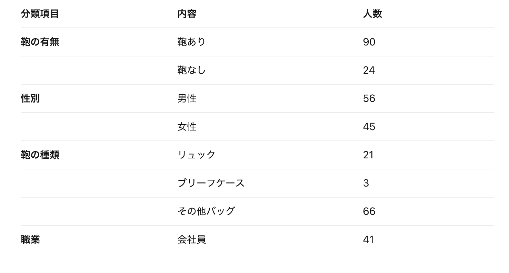

デザイン演習Ⅰ・Ⅱ 第３回 観察
調査内容
今回私たちの班は、横浜に来ている社会人のバックの種類について調査を行った。
調査項目
- 男性または女性（母数把握のため）
- 社会人（判断基準：スーツ、または作業着、社員証）
- 鞄の有無
- 鞄の種類（ブリーフケース、リュックサック、その他の３項目）
予定と違った際は臨機応変に対応する。
移動観察
定点観察をする場所に移動すると同時に移動観察を行った。途中、他の版図ルートがかぶっていたため、より多くの監察結果を得るために予定のルートを変更した。
日時：10月21日（火）
時間：13：44～13：52
天候：曇り時々雨
ルート地図
.png)
観察中の画像

※顔が映らないよう画像を荒くしています。
移動観察の結果


時間帯の影響か、バック自体を持っている人が想定よりも少なかった。この理由として会社員の遅めの昼休憩の人が多かったのではないかと考えられる。
平日のオフィス街だったからかスーツまたは社員証を付けている人が半分ほどと多く、鞄の種類はブリーフケースよりリュックを使っている人が多かった。この時間に外出している会社員は頻繁に出歩く職業であるため、比較的動き回りやすいリュックを使っているのだと考えられる。
定点観察
場所:日産グローバル本社ギャラリーの神奈川大学側の出口の2階のエスカレーター前。観察時に点検によりエレベーターは作動していなかったため、通常時と観察結果が変わっている可能性がある。
時間：14：03～14：13 計10分間
天候：曇り時々雨
観察中の画像
.jpg)
※顔が映らないよう画像を荒くしています。
定点観察の結果
.png)
移動観察の時よりもスーツを着ていた人が多かった。また、鞄も大きな荷物、特にリュックとトートバックが多かった。駅までの道なので帰宅や出社のために大きな荷物が多かったと思われる。
考察
リュックを持っている人は、空いた両手でスマホやエコバックを持っている人が多かったため、手を自由に使えるように、リュックを選択する人が増えたと思われる。また、観察データ内ではないが、実際に観察していてブリーフケースを使っている人は、省略されがちなネクタイやネクタイピンをつけていたり、
しっかり第一ボタンまでワイシャツを締めていたりと、フォーマルに見た目に気を使っている人々だった。このことから、ブリーフケースはクラシカルなものとして、現代でも需要があることが分かる。
反省点
社会人の定理が曖昧であった。オフィスカジュアルな服装をしている人が多く、社会人と判断する基準が観察担当者の一存になってしまっていて、人によってデータが変わってしまうリスクが出てしまった。
また、リュック、ブリーフケース以外のバックを使っている人のほうが圧倒的に多かったため、もう少し観察する種類を増やしておくべくべきだと思った。今回の監察は特に社会人に焦点を置いて観察していたが、もう少し視野を広く持つべきだったと思った。